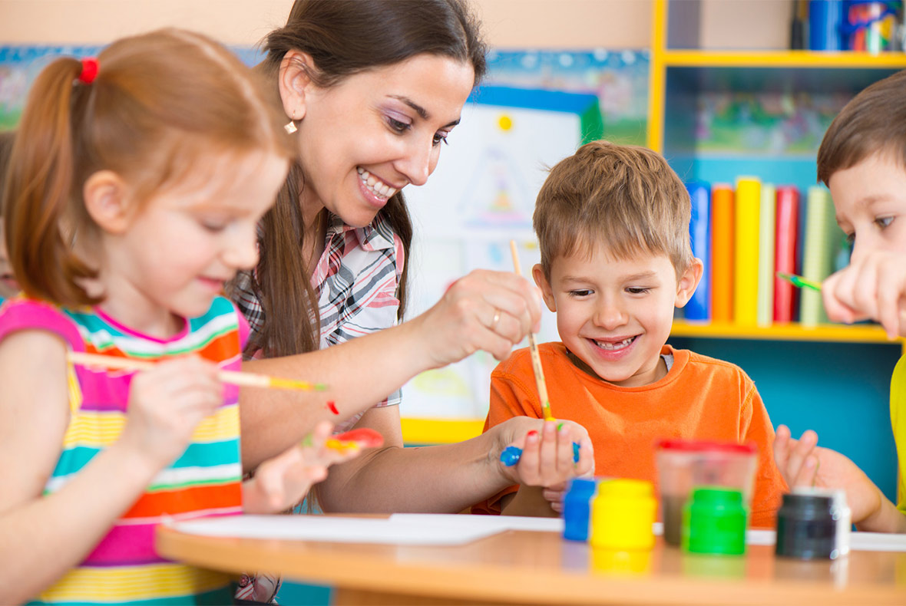

RESOURCES
The second most important decision you will make as a parent — apart from deciding to have the kid in the first place — is deciding which school for them to enroll in. Make the right decision and you could put them on a path toward lifelong learning, a prestigious college education and a successful career. Choose wrong, and well, you know. Talk about pressure.
Children vary in so many ways! Your child is like no other, yet possess so many qualities in common with others. Like a star that twinkles a little differently with each view, your child may seem to be many different people combined into one. Through the still unknown recipe of genes and upbringing, your child is a unique concoction of capabilities, wants, needs and motives.
Indeed, children’s bodies, minds, emotions and spirits combine to make unique individuals. This mix affects the kind of environment in which each child learns best. As a parent, you probably have some sense of this. But many of us feel at a loss to understand and respond to our own children’s capabilities, needs and personalities, even in our daily parenting, much less for school.
The burning question for you now is this: which qualities, in their unique combination within your child, really matter for choosing a school? Which of your child’s features will help her learn and feel better in some schools – with certain teachers, peers, materials, and expected ways of learning – and worse in others? Which of your child’s strengths and weaknesses can be addressed at school, and which can be developed at home? When your child’s and family’s needs fit well with what your child’s school offers, we call it a “Great Fit.”
There are 4 factors which parents should keep in mind before choosing the apt school for their child.
- What Your Child Learns: These are aspects of your child that affect what subjects and at what level of difficulty your child should be taught at school. These include your child’s Basic Learning Capability, other capabilities, and interests.
- How Your Child Learns: These are aspects of your child that affect how a school should teach and interact with your child both in and outside of the classroom. These include your child’s learning styles, motivation, physical and mental health challenges, behavior challenges, learning disabilities and disorders, and self-understanding.
- Social Issues: This includes the need for social contact with particular friends from the child’s perspective.
- Practical Matters: This includes essential extracurricular activities that may be compelling choice factors for some children.

Now, Why We Think That ‘School Of India’ Will Be A Great Fit For Your Child?
Because your child deserves the best. A school which is Indian at heart and International by vision & approach.
‘School of India’ functions under the support of the KK Educational and Charitable Trust, spearheaded by new-age thinking educationists who believe in celebrating India, celebrating your child, instilling a sense of pride about the country and most importantly building a foundation so that your child develops into a model human being. At ‘School of India’, we focus on each child individually and a conscious effort is made towards understanding each child’s talents and creating constructive learning environments. The objective at SOI is to facilitate all students to reach their highest potential, as we believe it is the most valuable investment we can make towards securing the future of our country.
The School of India believes in raising its children to be tolerant, responsible citizens, who celebrate the diversity of cultures in India and aim to better our country. We want to provide our students with a quality education that competes with international benchmarks, with an Indian focus. Our integrated approach has facilitated the evolution of young children into ‘Active citizens’. Students are encouraged to believe that they are the catalysts of change.
Our focus is on encouraging students to trust their own opinion while fostering confidence so that they realize and live to their full potential.
Our Mission
To create an autonomous education board that emerges as the ‘thought leader’ in the education space. To build a robust teachers training system and make them active partners in shaping the future of the school. To impart a superior quality education that is holistic and innovative. To design spaces that are sensitive to the needs of the child and the environment.
Teaching Philosophy
While learning about what is happening around the world, we many a times forget to learn things about our own country. At ‘SCHOOL OF INDIA’ our teachings are inspired by the rich legacy of India. An India that has been instrumental in shaping the modern world as we see it today. We celebrate everything Indian and instill a sense of pride about the country in your child.